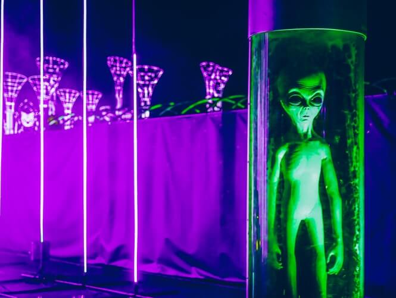

Färg Harmonier
Harmoni kan definieras som ett tilltalande arrangemang av delar, oavsett om det är musik, poesi, färg eller till och med en glassglass. I visuella upplevelser är harmoni något som är behagligt för ögat. Det engagerar betraktaren och det skapar en inre känsla av ordning, en balans i den visuella upplevelsen. När något inte är harmoniskt är det antingen tråkigt eller kaotiskt. Vid en ytterlighet är en visuell upplevelse som är så intetsägande att tittaren inte är engagerad. Den mänskliga hjärnan kommer att avvisa understimulerande information. Å andra sidan är en visuell upplevelse som är så överdriven, så kaotisk att tittaren inte tål att titta på den. Den mänskliga hjärnan avvisar vad den inte kan organisera, vad den inte kan förstå. Den visuella uppgiften kräver att vi presenterar en logisk struktur. Färgharmoni ger visuellt intresse och en känsla av ordning. Sammanfattningsvis leder extrem enhet till understimulering, extrem komplexitet leder till överstimulering. Harmoni är en dynamisk jämvikt.
Några formler för färgharmoni
Det finns många teorier för harmoni. Följande illustrationer och beskrivningar presenterar några grundläggande formler.
Ett färgschema baserat på analoga färger
Analoga färger är tre färger som är sida vid sida på ett 12-delat färghjul, såsom grön, gulgrön och gul. Vanligtvis dominerar en av de tre färgerna.
Ett färgschema baserat på kompletterande färger
Kompletterande färger är två färger som är direkt mittemot varandra, såsom rött och grönt och rödlila och gulgrönt. I illustrationen ovan finns det flera variationer av gulgrön i bladen och flera variationer av rödlila i orkidén. Dessa motsatta färger skapar maximal kontrast och maximal stabilitet.
Ett färgschema baserat på naturen
Naturen är en perfekt utgångspunkt för färgharmoni. I bilden ovan skapar rött och grönt en harmonisk design, oavsett om denna kombination passar in i en teknisk formel för färgharmoni.